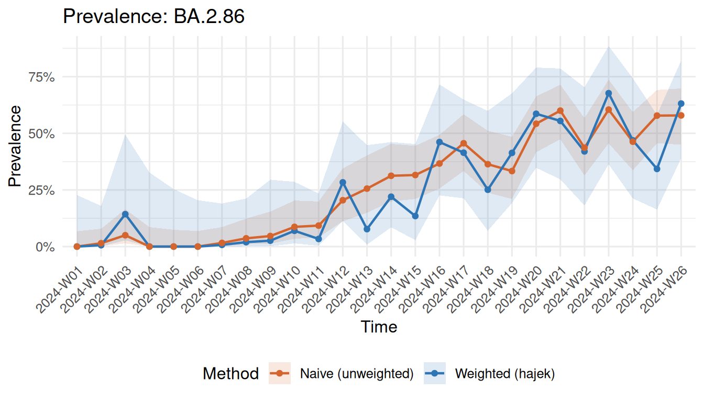
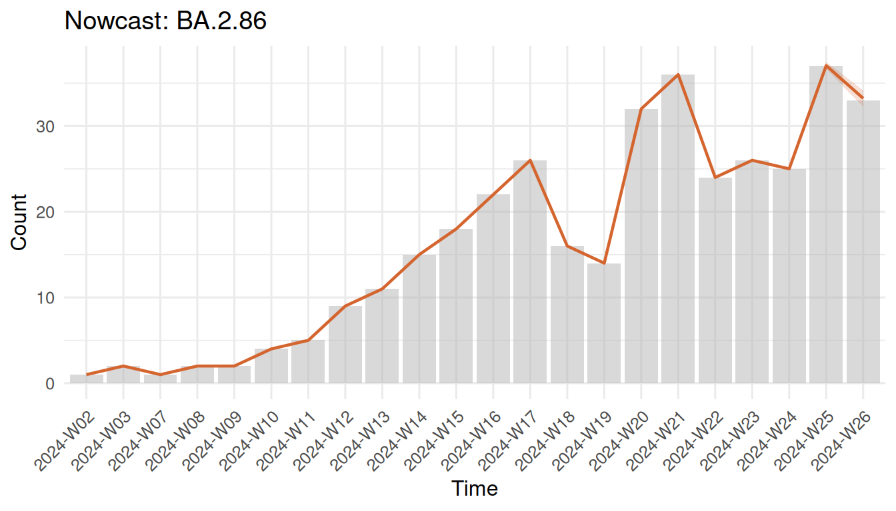

The problem
Pathogen genomic surveillance is the backbone of pandemic preparedness. By sequencing positive samples and tracking lineage frequencies over time, public health agencies can detect emerging variants early and monitor their spread.
However, real-world surveillance systems have a fundamental bias problem: sequencing rates are highly unequal across regions and institutions. A well-resourced capital city might sequence 15% of positive cases, while a rural area sequences only 0.5%. If you simply count uploaded sequences to estimate “what fraction is variant X?”, the answer is dominated by high-sequencing regions — regardless of what is actually circulating elsewhere.
On top of this, there is a reporting delay problem. From sample collection to sequence upload, 1–4 weeks can pass. This means the most recent weeks of data are always incomplete, and naive trend estimates systematically undercount the latest period.
survinger addresses both problems in a unified framework.
What survinger does
The package provides three core capabilities:
Resource allocation: Given limited sequencing capacity, how should sequences be distributed across regions and sources to maximize surveillance value?
Design-weighted estimation: Given that sequencing rates differ, how do we estimate lineage prevalence correctly?
Delay-adjusted nowcasting: Given that recent data is incomplete, what is the true current trend?
Quick start
library(survinger)
# Load example data (simulated, 5 regions, 26 weeks)
data(sarscov2_surveillance)
sim <- sarscov2_surveillance
# Create a surveillance design object
design <- surv_design(
data = sim$sequences,
strata = ~ region,
sequencing_rate = sim$population[c("region", "seq_rate")],
population = sim$population,
source_type = "source_type"
)
print(design)
#> ── Genomic Surveillance Design ─────────────────────────────────────────────────
#> Observations: 1,349
#> Strata: 5 (region)
#> Date range: 2024-01-01 to 2024-06-30
#> Lineages: 4
#> Sources: clinical, sentinel, wastewater
#> Weight range: [6.901, 225.741]The design object captures the stratification structure and computes inverse-probability weights automatically.
Comparing weighted vs naive estimates
The core value proposition: design-weighted estimates correct for sequencing inequality.
weighted <- surv_lineage_prevalence(design, "BA.2.86", method = "hajek")
naive <- surv_naive_prevalence(design, "BA.2.86")
surv_compare_estimates(weighted, naive)
Weighted vs naive prevalence estimates for BA.2.86
The gap between the two lines shows the bias introduced by ignoring unequal sequencing rates.
Optimizing resource allocation
If you have 500 sequencing slots this week, how should you distribute them?
alloc <- surv_optimize_allocation(design, "min_mse", total_capacity = 500)
print(alloc)
#> ── Optimal Sequencing Allocation ───────────────────────────────────────────────
#> Objective: min_mse
#> Total capacity: 500 sequences
#> Strata: 5
#>
#> # A tibble: 5 × 3
#> region n_allocated proportion
#> <chr> <int> <dbl>
#> 1 Region_A 130 0.26
#> 2 Region_B 42 0.084
#> 3 Region_C 44 0.088
#> 4 Region_D 166 0.332
#> 5 Region_E 118 0.236Compare with alternative strategies:
surv_compare_allocations(design, total_capacity = 500)
#> # A tibble: 5 × 4
#> strategy total_mse detection_prob imbalance
#> <chr> <dbl> <dbl> <dbl>
#> 1 equal 0.000569 0.993 0.0486
#> 2 proportional 0.000460 0.993 0.00000482
#> 3 min_mse 0.000459 0.993 0.0000292
#> 4 max_detection 0.000560 0.993 0.0456
#> 5 min_imbalance 0.000460 0.993 0.00000482Delay correction
Estimate the reporting delay distribution and nowcast recent counts:
delay_fit <- surv_estimate_delay(design)
print(delay_fit)
#> ── Reporting Delay Distribution ────────────────────────────────────────────────
#> Distribution: "negbin"
#> Strata: none (pooled)
#> Observations: 1349
#> Mean delay: 9.9 days
#>
#> # A tibble: 1 × 5
#> stratum distribution mu size converged
#> <chr> <chr> <dbl> <dbl> <lgl>
#> 1 all negbin 9.95 3.52 TRUE
nowcast <- surv_nowcast_lineage(design, delay_fit, "BA.2.86")
plot(nowcast)
Combined correction
The main inference function applies both design weighting and delay correction simultaneously:
adjusted <- surv_adjusted_prevalence(design, delay_fit, "BA.2.86")
print(adjusted)
#> ── Design-Weighted Delay-Adjusted Prevalence ───────────────────────────────────
#> Correction: "design:hajek+delay:direct"
#>
#> # A tibble: 26 × 9
#> time lineage n_obs_raw n_obs_adjusted prevalence se ci_lower ci_upper
#> <chr> <chr> <int> <dbl> <dbl> <dbl> <dbl> <dbl>
#> 1 2024-W01 BA.2.86 53 53 0 0 0 0
#> 2 2024-W02 BA.2.86 68 68 0.00597 0.0178 0 0.0408
#> 3 2024-W03 BA.2.86 40 40 0.143 0.126 0 0.389
#> 4 2024-W04 BA.2.86 41 41 0 0 0 0
#> 5 2024-W05 BA.2.86 48 48 0 0 0 0
#> 6 2024-W06 BA.2.86 52 52 0 0 0 0
#> 7 2024-W07 BA.2.86 62 62 0.00740 0.0204 0 0.0473
#> 8 2024-W08 BA.2.86 55 55 0.0195 0.0332 0 0.0847
#> 9 2024-W09 BA.2.86 43 43 0.0261 0.0480 0 0.120
#> 10 2024-W10 BA.2.86 46 46 0.0697 0.0621 0 0.191
#> # ℹ 16 more rows
#> # ℹ 1 more variable: mean_report_prob <dbl>Detection power
How likely is the current system to detect a variant at 1% prevalence?
det <- surv_detection_probability(design, true_prevalence = 0.01)
cat("Weekly detection probability:", round(det$overall, 3), "\n")
#> Weekly detection probability: 0.406
cat("Required sequences for 95% detection:", surv_required_sequences(0.01), "\n")
#> Required sequences for 95% detection: 299How survinger differs from phylosamp
The phylosamp package provides sample size calculations for variant surveillance — it answers “how many sequences do I need in total?”
survinger answers the next question: “Given my fixed capacity, how do I allocate it optimally, and how do I correct the resulting estimates for the biases my design introduces?”
The two packages are complementary, not competing.
Next steps
-
vignette("allocation-optimization")— deep dive into allocation -
vignette("delay-correction")— delay estimation and nowcasting